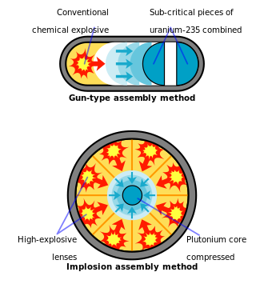
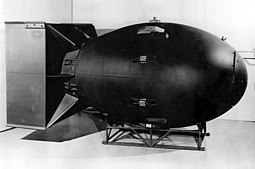
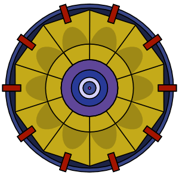

São as que utilizam a chamada fissão nuclear, onde os núcleos atómicos pesados do urânio ou plutónio são desintegrados em elementos mais leves quando são bombardeados por neutrões. Ao bombardear-se um núcleo produzem-se mais neutrões, que bombardeiam outros núcleos, gerando uma reação em cadeia. Estas são as historicamente chamadas "Bombas-A", apesar de este nome não ser preciso pelo facto de que a chamada fusão nuclear também é tão atómica quanto a fissão. O isótopo mais utilizado para sofrer fissão nuclear é o U235, o qual ao capturar um neutrão transforma-se em U236 durante muito pouco e então sofre fissão.
 Bomba Fat Man
Baseiam-se na chamada fusão nuclear, onde núcleos leves de hidrogénio e hélio combinam-se para formar elementos mais pesados e libertam neste processo enormes quantidades de energia. Bombas que utilizam a fusão são também chamadas bombas-H, bombas de hidrogénio ou bombas termonucleares, pois a fusão requer uma altíssima temperatura para que a sua reação em cadeia ocorra. A bomba de fusão nuclear é considerada a maior força destrutiva já criada pelo homem, embora nunca tenha sido usada em uma guerra. Oficialmente, a mais poderosa Bomba de fusão nuclear já testada atingiu o poder de destruição de 57 Megatons - conhecida como Tsar Bomba - em um teste realizado pela URSS em outubro de 1961. Esta bomba tinha mais de 5 mil vezes o poder explosivo da bomba de Hiroshima, e maior poder explosivo que todas as bombas usadas na II Guerra Mundial somadas (incluindo as 2 bombas nucleares lançadas sobre o Japão) multiplicado 10 vezes.

Esquema de um modelo de uma Bomba Nuclear
Bomba suja é um termo atualmente usado para designar uma arma radioativa, uma bomba não nuclear que dispersa material radioativo que fica armazenado no seu interior. Quando explode, a dispersão de material radioativo causa contaminação nuclear e doenças semelhantes às que ocorrem quando uma pessoa é contaminada pela radiação de uma bomba atómica. As bombas sujas podem deixar uma área inabitável por décadas. Um exemplo prático do que pode acontecer no caso de um lançamento de uma bomba suja foi o bombardeamento da Usina Nuclear iraquiana (Israel bombardeou o reator nuclear iraquiano de Osirak em 1981, o que causou a morte de milhares de iraquianos). Após o bombardeio por Israel, pessoas apresentavam problemas respiratórios irreversíveis e contaminação corporal intensa vindo a falecer ou desenvolver sintomas cancerígenos irreversíveis. A bomba suja, mesmo com poucos quilos de resíduo nuclear, quando dispersados diretamente na atmosfera, pode gerar uma nuvem de material radioativo e envolver uma cidade inteira provocando a morte de milhares de pessoas.
Uma última variante da bomba atómica é a chamada bomba de neutrões, em geral um dispositivo termonuclear pequeno, com corpo de níquel ou cromo, onde os neutrões gerados na reação de fusão intencionalmente não são absorvidos pelo interior da bomba, permitindo que escapem. As emanações de raios-X e de neutrões de alta energia são seu principal mecanismo destrutivo. Os neutrões são mais penetrantes que outros tipos de radiação, de tal forma que muitos materiais de proteção que bloqueiam raios gama são pouco eficientes contra eles. As bombas de neutrões têm ação destrutiva apenas sobre organismos vivos, mantendo, por exemplo, a estrutura de uma cidade intacta. Isso pode representar uma vantagem militar, visto que existe a possibilidade de se eliminar os inimigos e apoderar-se de seus recursos.
Animação do funcionamento de uma bomba de neutrões
São armas nucleares de pequeno poder explosivo, geralmente na faixa de 0,5 a 5 quilotoneladas de TNT. Geralmente o seu uso tático é muito específico e envolve utilizar apenas uma das principais formas de energia libertada pela bomba, o poder de destruição e calor ou o PEM (pulso eletromagnético). Mesmo com poder explosivo reduzido, estas armas têm efeito radioativo, o que sempre dificultou seu amplo emprego.
O uso de armas nucleares táticas seria destinado principalmente para o emprego contra as forças armadas do adversário. Esta função seria de importância maior se as forças-alvo encontrassem-se próximas às forças que estão a lançar a bomba, já que isto impediria o uso de uma arma de grande poder destrutivo que pudesse atingir também a força que lançou a bomba. Também são usadas como ogivas de cargas de profundidade nucleares, para uso antissubmarino a grandes profundidades.
Durante a Guerra Fria este tipo de arma chegou a ser usada como ogiva em mísseis ar-ar (AAM) pelas forças armadas dos Estados Unidos e URSS. O objetivo deste tipo de míssil era o seu uso contra bombardeiros estratégicos de altas altitudes, onde o pulso eletromagnético da arma era mais eficaz para danificar os equipamentos eletrónicos dos bombardeiros adversários do que a própria onda de choque da explosão da bomba, minimizada pelo ar rarefeito.